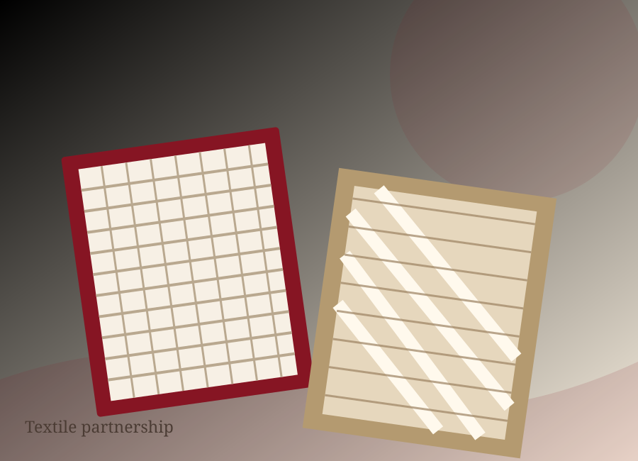

PRODUCTS & PARTNERSGood work grows
Good work grows
together.
Product thinking and collaborative relationships help build textile programmes around clear requirements and dependable communication.

PRODUCT FAMILIES
Find your starting point.
Choose a product family to explore the range, then get in touch to confirm specifications and availability.


BUILT ON COLLABORATIONPartnership means
Partnership means
working in sync.
Retail & sourcing teams
Home textile brands
Hospitality buyers
Product developers
Distribution partners
Long-term programmes
Customer and partner names or logos should only be published after the company confirms permission and approved brand assets.